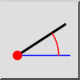
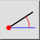

Linea da angle
Barra degli strumenti / Icona:
 

Menù: Disegna > Linea > Linea da angle
Scorciatoia: L, A
Comandi: lineangle | la
Descrizione:
Utilizzare questo strumento per creare linee con un determinato angolo. La
linea viene solitamente tagliata alla lunghezza desiderata dopo la
creazione.
Procedura:
- Scegliere il
tipo di riga desiderato nella barra
degli strumenti delle opzioni.
- Immettere l'angolo e la lunghezza della linea nella barra degli strumenti
delle opzioni.
- Nella barra degli strumenti delle opzioni, scegliere il punto di
riferimento sulla linea che si desidera utilizzare per il posizionamento della
linea. Inizio" significa che la linea avrà il suo punto di partenza nel punto
in cui viene posizionata.
- Posizionare la linea con il mouse o inserendo una coordinata nella riga di
comando.